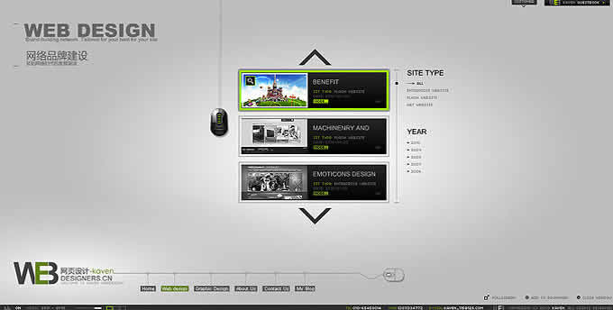

- 


DEMO演示 3D轮播图
DEMO演示 js代码
//3D轮播图
//主要原理：
//将每个元素的width left top index opacity等属性值存入数组
//点击按钮后 通过arrRollPrev及arrRollNext函数 改变数组元素的排序
//然后把数组元素重新赋值给每个元素 形成运动
window.onload = function(){
var oPrev = getByClass(document, 'prev')[0];
var oNext = getByClass(document, 'next')[0];
var aLi = document.getElementsByTagName('ul')[0].getElementsByTagName('li');
var arrWidth = [];
var arrLeft = [];
var arrTop = [];
var arrZIndex = [];
var arrOpacity = [];
//将各个属性存入到相应数组中
for(var i=0; i<aLi.length; i++){
arrWidth.push(getStyle(aLi[i], 'width'));
arrLeft.push(getStyle(aLi[i], 'left'));
arrTop.push(getStyle(aLi[i], 'top'));
arrZIndex.push(getStyle(aLi[i], 'zIndex'));
arrOpacity.push(getStyle(aLi[i], 'opacity'));
}
//点击一次 改变一次数组元素的位置
oPrev.onclick = function(){
arrRollPrev(arrWidth);
arrRollPrev(arrLeft);
arrRollPrev(arrTop);
arrRollPrev(arrZIndex);
arrRollPrev(arrOpacity);
change();
}
oNext.onclick = function(){
arrRollNext(arrWidth);
arrRollNext(arrLeft);
arrRollNext(arrTop);
arrRollNext(arrZIndex);
arrRollNext(arrOpacity);
change();
}
//例子 [1,2,3,4,5] 执行一次后 变成[2,3,4,5,1]
function arrRollPrev(arr){
var temp = arr.shift();
arr.push(temp);
}
//例子 [1,2,3,4,5] 执行一次后 变成[5,1,2,3,4]
function arrRollNext(arr){
var temp = arr.pop();
arr.unshift(temp);
}
//经过变化的数组元素 再赋值给DOM节点 形成运动效果
function change(){
for(var i=0; i<aLi.length; i++){
aLi[i].style.zIndex = arrZIndex[i];
bufferMove( aLi[i], { "width": arrWidth[i], "left": arrLeft[i], "top": arrTop[i], "opacity": arrOpacity[i] } );
}
}
}
//通过class获取元素
function getByClass(oParent,sClass){
var aEle = oParent.getElementsByTagName('*');
var aResult = [];
for(var i=0 ; i<aEle.length ; i++){
if(aEle[i].className == sClass){
aResult.push(aEle[i]);
}
}
return aResult;
}
/* 缓冲运动
* obj 运动对象
* json 运动目标属性 如{"left":"800px","opacity":"0.5"}
* fn 回调函数
*/
function bufferMove(obj,json,fn){
var iCur = 0;
var iTarget = 0;
var iSpeed = 0;
var bStop = true;
clearInterval(obj.fMove);
obj.fMove = setInterval(function(){
bStop = true; //每次定时器一开始 就设置bStop为ture
for(attr in json){ //for in json 同时做n个属性的缓冲型数值变化
if(attr == 'opacity'){
//对于opacity属性 传入0.x 然后放大100倍进行操作 后续赋值再除以100
iCur = parseInt(parseFloat(getStyle(obj,attr)) * 100);
iTarget = parseInt(parseFloat(json[attr]) * 100);
}else{
iCur = parseInt(getStyle(obj,attr));
iTarget = parseInt(json[attr]);
}
iSpeed = (iTarget - iCur)/8;
if(iSpeed > 0){
iSpeed = Math.ceil(iSpeed);
}
if(iSpeed < 0){
iSpeed = Math.floor(iSpeed);
}
//每个定时器周期里 for in 循环了n次 有n个同时进行的bufferMove函数 从而变化属性值
//n个bufferMove函数里只要有任意一个函数里的属性值还没到达终点 都会把bStop变为false
//当所有属性值都到达终点后 也就是n个bufferMove函数都不执行这句的时候
//这次定时器周期最后的bStop没有被变化为false 还是true
//当这次定时器周期的bStop还是ture的话 在定时器周期函数最后判断bStop为ture 那就关闭定时器了
if(iTarget != iCur){
bStop = false;
}
if(attr == 'opacity'){
obj.style[attr] = (iCur + iSpeed)/100 + '';
obj.style.filter = 'alpha(opacity:'+(iCur+iSpeed)+')';
}else{
obj.style[attr] = iCur + iSpeed + 'px';
}
}
if(bStop){ //只要有任意一个还没到达终点 bStop会被变成false 不停止定时器
clearInterval(obj.fMove); //当所有属性值都到达终点后 bStop不会变false 还是原来的true 停止定时器
if(fn){
fn();
}
}
},20);
}
html代码
<div id="automatic">
<ul>
<li class="pos_0"><img src="img/8.jpg"/></li>
<li class="pos_1"><img src="img/1.jpg"/></li>
<li class="pos_2"><img src="img/2.jpg"/></li>
<li class="pos_3"><img src="img/3.jpg"/></li>
<li class="pos_4"><img src="img/4.jpg"/></li>
<li class="pos_5"><img src="img/5.jpg"/></li>
<li class="pos_6"><img src="img/6.jpg"/></li>
<li class="pos_6"><img src="img/7.jpg"/></li>
</ul>
<div class="prev"><img src="img/prev.png"/></div>
<div class="next"><img src="img/next.png"/></div>
</div>
css代码
*{
padding:0px;
margin:0px;
}
body{
background: #ececec;
padding-top: 50px;
}
li{
list-style: none;
}
img{
border: none;
}
#automatic{
width: 970px;
height: 344px;
position: relative;
margin: 50px auto;
overflow: hidden;
/*background: red;*/
}
#automatic ul{
width: 970px;
height: 344px;
position: absolute;
top: 0;
left: 0;
z-index: 1;
}
#automatic li{
position: absolute;
}
li img{
width: 100%;
}
#automatic .pos_0{
width: 100px;
top: -104px;
left: 0;
z-index: 1;
filter: alpha(opacity=0);
opacity: 0;
}
#automatic .pos_1{
width: 270px;
top: 104px;
left: 0;
z-index: 2;
filter: alpha(opacity=40);
opacity: 0.4;
}
#automatic .pos_2{
width: 510px;
top: 43px;
left: 50px;
z-index: 3;
filter: alpha(opacity=60);
opacity: 0.6;
}
#automatic .pos_3{
width: 680px;
top: 0;
left: 145px;
z-index: 4;
filter: alpha(opacity=100);
opacity: 1;
}
#automatic .pos_4{
width: 510px;
top: 43px;
left: 410px;
z-index: 3;
filter: alpha(opacity=60);
opacity: 0.6;
}
#automatic .pos_5{
width: 270px;
top: 104px;
left: 700px;
z-index: 2;
filter: alpha(opacity=40);
opacity: 0.4;
}
#automatic .pos_6{
width: 270px;
top: -104px;
left: 700px;
z-index: 1;
filter: alpha(opacity=0);
opacity: 0;
}
.prev{
width: 76px;
height: 112px;
position: absolute;
top: 128px;
left: 76px;
z-index: 5;
cursor: pointer;
}
.next{
width: 76px;
height: 112px;
position: absolute;
top: 128px;
right: 76px;
z-index: 5;
cursor: pointer;
}